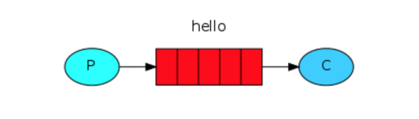

介绍
RabbitMQ is a message broker: it accepts and forwards messages. You can think about it as a post office: when you put the mail that you want posting in a post box, you can be sure that Mr. or Ms. Mailperson will eventually deliver the mail to your recipient. In this analogy, RabbitMQ is a post box, a post office and a postman. it accepts, stores and forwards binary blobs of data ‒ messages.
rabbitmy是一个消息代理(集群中的一台或多台服务器统称broker, 可以认为是消息转发器)：它接受和转发消息。你可以把它想象成是一个邮局：当你把想邮寄出去的邮件放进邮箱的时候，你可以相信邮寄员会最终把邮件传递给你的接受者。在这里，rabbitmq是邮箱、邮局、邮寄员。它接受、存储、转发数据的二进制块，即消息。
A program that sends messages is a producer .
A queue is the name for a post box which lives inside RabbitMQ. Although messages flow through RabbitMQ and your applications, they can only be stored inside a queue. A queue is only bound by the host's memory & disk limits, it's essentially a large message buffer. Many producers can send messages that go to one queue, and many consumers can try to receive data from one queue. This is how we represent a queue:
A consumer is a program that mostly waits to receive messages:
发送消息的程序叫做生产者
队列是RabbitMQ内部的邮箱的名称。尽管消息流经RabbitMQ和您的应用程序，但它们只能存储在队列中。队列仅受主机的内存和磁盘限制的约束，它实质上是一个大的消息缓冲区。许多生产者可以发送消息到一个队列，许多消费者可以尝试从一个队列接收数据。
等待接受消息的程序被叫做消费者
Sending
Producer sends messages to the "hello" queue. The consumer receives messages from that queue.

生产者发送消息到“hello”队列，消费者从队列接受消息。
RabbitMQ libraries
RabbitMQ speaks multiple protocols. This tutorial uses AMQP 0-9-1, which is an open, general-purpose protocol for messaging. There are a number of clients for RabbitMQ in many different languages. In this tutorial series we're going to use Pika 1.0.0, which is the Python client recommended by the RabbitMQ team. To install it you can use the pip package management tool:
python -m pip install pika --upgrade
python中使用pika作为客户端。
示例：
Our first program
send.pywill send a single message to the queue. The first thing we need to do is to establish a connection with RabbitMQ server.
#!/usr/bin/env python
import pika
connection = pika.BlockingConnection(pika.ConnectionParameters('localhost'))
channel = connection.channel()
Next, before sending we need to make sure the recipient queue exists. If we send a message to non-existing location, RabbitMQ will just drop the message.
发送之前必须确保接收队列存在，如果不存在，则丢弃消息。
channel.queue_declare(queue='hello')
In RabbitMQ a message can never be sent directly to the queue, it always needs to go through an exchange. But let's not get dragged down by the details ‒ you can read more about exchanges in the third part of this tutorial. All we need to know now is how to use a default exchange identified by an empty string. This exchange is special ‒ it allows us to specify exactly to which queue the message should go. The queue name needs to be specified in the routing_key parameter:
在rabbitmq中绝不能直接向一个队列发送消息，它需要通过exchange，但是我们不要被细节拖累-你可以阅读更多关于exchanges的信息。我们用空字符串来定义默认的exchange。这个exchange很特殊，它允许我们精确地指定消息应该去哪个队列。队列的名字需要标识在routing_key中。
channel.basic_publish(exchange='',
routing_key='hello',
body='Hello World!')
print(" [x] Sent 'Hello World!'")
Before exiting the program we need to make sure the network buffers were flushed and our message was actually delivered to RabbitMQ. We can do it by gently closing the connection.
在退出程序之前，我们需要确保网络缓冲区已被刷新, 并且消息被真正的传递到了rabbitmq，我们可以通过关闭连接来完成它。
connection.close()
Sending doesn't work!
If this is your first time using RabbitMQ and you don't see the "Sent" message then you may be left scratching your head wondering what could be wrong. Maybe the broker was started without enough free disk space (by default it needs at least 200 MB free) and is therefore refusing to accept messages. Check the broker logfile to confirm and reduce the limit if necessary. The configuration file documentation will show you how to set disk_free_limit.
没有发送成功！
可能是因为broker启动的时候没有足够的硬盘空间(默认需要200M)，它会拒绝接受消息。检查broker的logfile来确认。在configuration文档中会向你展示如何设置disk_free_limit
Receiving
Our second program
receive.pywill receive messages from the queue and print them on the screen.Again, first we need to connect to RabbitMQ server. The code responsible for connecting to Rabbit is the same as previously.
The next step, just like before, is to make sure that the queue exists. Creating a queue using queue_declare is idempotent ‒ we can run the command as many times as we like, and only one will be created.
receive.py 将会从队列接收消息并打印在屏幕上。
首先我们必须连接到rabbitmq服务器上，然后确认队列是否存在。
用queue_declare创建队列是幂等的，我们能运行这个命令多次，但是只有一个队列会被创建。
channel.queue_declare(queue='hello')
You may ask why we declare the queue again ‒ we have already declared it in our previous code. We could avoid that if we were sure that the queue already exists. For example if send.py program was run before. But we're not yet sure which program to run first. In such cases it's a good practice to repeat declaring the queue in both programs.
你可能会问为什么又声明了一次队列，我们已经在之前的代码中声明过了，如果能确保队列已经存在，则可以不用重复声明，比如send.py在之前已经运行了。但是不能确定哪个程序先运行，这种情况下在两边的代码中重复声明会是一个好的习惯。
题外话
Listing queues
You may wish to see what queues RabbitMQ has and how many messages are in them. You can do it (as a privileged user) using the rabbitmqctl tool:
列出所有的队列，有多少消息在队列中。
sudo rabbitmqctl list_queues`
Receiving messages from the queue is more complex. It works by subscribing a callback function to a queue. Whenever we receive a message, this callback function is called by the Pika library. In our case this function will print on the screen the contents of the message.
从队列接收消息更复杂一些。队列订阅一个回调函数，无论何时接收到一个消息，这个回调函数都会被调用。
def callback(ch, method, properties, body):
print(" [x] Received %r" % body)
channel.basic_consume(queue='hello',
auto_ack=True,
on_message_callback=callback)
For that command to succeed we must be sure that a queue which we want to subscribe to exists. Fortunately we're confident about that ‒ we've created a queue above ‒ using
queue_declare.And finally, we enter a never-ending loop that waits for data and runs callbacks whenever necessary.
为了让basic_consume能顺利执行，我们必须确保队列存在。幸运的是我们用queue_declare创建了。
最后，启动了一个从不停止的循环，等待消息并在必要时运行回调。
print(' [*] Waiting for messages. To exit press CTRL+C')
channel.start_consuming()
完整的程序
send.py
#!/usr/bin/env python
import pika
connection = pika.BlockingConnection(
pika.ConnectionParameters(host='localhost'))
channel = connection.channel()
channel.queue_declare(queue='hello')
channel.basic_publish(exchange='', routing_key='hello', body='Hello World!')
print(" [x] Sent 'Hello World!'")
connection.close()
receive.py
#!/usr/bin/env python
import pika
connection = pika.BlockingConnection(
pika.ConnectionParameters(host='localhost'))
channel = connection.channel()
channel.queue_declare(queue='hello')
def callback(ch, method, properties, body):
print(" [x] Received %r" % body)
channel.basic_consume(
queue='hello', on_message_callback=callback, auto_ack=True)
print(' [*] Waiting for messages. To exit press CTRL+C')
channel.start_consuming()